<ng-container *ngIf="userInfo">

  <mat-label align="start" class="filter-label">Профіль</mat-label>

  <p class="t-med gray mb-2">Заповніть персональну інформацію.</p>

  <div class="img-wrapper">

    <ng-container *ngIf="userImg !== 'user_default.svg' && isLoadingImg">
      <div class="img-wrapper">
        
        <button class="card-1" (click)="_fileInput.click()">
          <div class="flex-column t-c">
            <p class="t-lar bold accent">ЗАВАНТАЖИТИ ФОТО</p>
          </div>
          <div class="input-div">
            <i class="icon-up fa-solid fa-cloud-arrow-up" for="upload"></i>
            <input #_fileInput type="file" (change)="openCropperDialog($event)" accept="image/*" hidden>
            <div class="input-up"></div>
          </div>
        </button>
      </div>
    </ng-container>

    <ng-container *ngIf="userImg && userImg !== 'user_default.svg' && !isLoadingImg">
      <div class="img-fluid">
        <div class="container-loader-mini">
          <mat-spinner color="warn"></mat-spinner>
          
          <div class="t-min bold gray mt-2">Завантаження фото</div>
        </div>
      </div>
    </ng-container>

    <ng-container *ngIf="!userImg || userImg === 'user_default.svg'">
      <div class="img-wrapper">
        
        <div class="card-1">
          <div class="flex-column t-c">
            <p class="t-lar bold accent">ЗАВАНТАЖИТИ ФОТО</p>
          </div>
          <div class="input-div">
            <i class="icon-up fa-solid fa-cloud-arrow-up" for="upload"></i>
            <input #_fileInput type="file" (change)="openCropperDialog($event)" accept="image/*" hidden>
            <button class="input-up" (click)="_fileInput.click()"> </button>
          </div>
        </div>
      </div>
    </ng-container>


  </div>
  <mat-form-field class="item-select mt-3 w-100" appearance="outline">
    <input matInput [matDatepicker]="picker" [(ngModel)]="userInfo.dob">
    <mat-datepicker-toggle matSuffix [for]="picker"></mat-datepicker-toggle>
    <mat-datepicker #picker></mat-datepicker>
    <mat-hint class="gray" align="start">Дата народження</mat-hint>
  </mat-form-field>
  <mat-form-field class="item-select" appearance="outline">
    <mat-label>Прізвище</mat-label>
    <input name="userInfo.lastName" matInput [(ngModel)]="userInfo.lastName">
  </mat-form-field>
  <mat-form-field class="item-select" appearance="outline">
    <mat-label>Ім'я</mat-label>
    <input name="userInfo.firstName" matInput [(ngModel)]="userInfo.firstName">
  </mat-form-field>
  <mat-form-field class="item-select" appearance="outline">
    <mat-label>По батькові</mat-label>
    <input name="userInfo.surName" matInput [(ngModel)]="userInfo.surName">
  </mat-form-field>

  <div [@appearance] class="btn-group">
    <button class="b-primary mr-2" (click)="setToogleMenu()">
      <i class="fa-regular fa-circle-xmark"></i>
    </button>

    <button class="b-primary p-2" (click)="saveInfoUser()">
      <div class="t-med bold white">ЗБЕРЕГТИ</div>
      <i class="fa-regular fa-circle-check pl-2 white"></i>
    </button>
  </div>
</ng-container>
